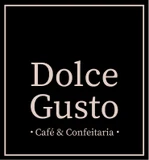

Quiero Café Bento Gonçalves
Logotipo oficial
Unidade localizada no bairro Planalto com extensa oferta de cafés, brunch, lanches e pratos.
- Endereço: Rua 15 de Novembro, 8
- Bairro: Planalto
- Cidade: Bento Gonçalves - RS
- Telefone: (54) 99629-4715
Serra Gaúcha
Explore cafeterias reais em Bento Gonçalves, da área urbana do bairro São Bento e Planalto até os Caminhos de Pedra.

Capital brasileira da uva e do vinho, Bento Gonçalves também atrai visitantes e moradores por suas padarias artesanais, confeitarias de inspiração europeia e cafeterias espalhadas por bairros charmosos e roteiros rurais.
Quem pesquisa por cafeteria perto de mim em Bento Gonçalves pode escolher entre o polo gastronômico do bairro São Bento, as vias centrais próximas à Via Del Vino e à Cidade Alta, ou o trajeto turístico do Distrito de São Pedro.
Estabelecimentos reais conferidos em fontes públicas em 15/11/2026.
Logotipo oficial
Unidade localizada no bairro Planalto com extensa oferta de cafés, brunch, lanches e pratos.

Logotipo oficial
Tradicional café e confeitaria no bairro São Bento, também com unidade expressa na Via Del Vino (Rua Marechal Deodoro, 112).

Imagem ilustrativa
Cafeteria e pastelaria portuguesa especializada em pastéis de nata e cafés harmonizados.
Imagem ilustrativa
Padaria artesanal e cafeteria na Cidade Alta com pães especiais, doces e cafés.
Imagem ilustrativa
Cafeteria no Centro de Bento Gonçalves voltada a expressos, bebidas especiais e lanches.
Imagem ilustrativa
Cafeteria e café colonial nos Caminhos de Pedra, valorizando a gastronomia típica da imigração italiana.
Aviso: Endereços, telefones e horários podem sofrer alterações. Confirme com o estabelecimento ou consulte nossas fontes de verificação.
Áreas de destaque pesquisadas: Centro, São Bento, Planalto, Cidade Alta, São Pedro. A Rua Herny Hugo Dreher e a Rua Tietê, no bairro São Bento, reúnem espaços concorridos para café da tarde, pastéis de nata e brunch. No Centro e no Planalto ficam opções práticas para dias úteis, enquanto a Rodovia VRS 855 leva aos cafés coloniais.
Em períodos de vindima e inverno na Serra Gaúcha, recomenda-se consultar horários de atendimento e disponibilidade de mesas com antecedência.
O bairro São Bento e o bairro Planalto reúnem várias opções verificadas com fácil acesso a partir do Centro.
Sim, no Distrito de São Pedro, ao longo da VRS 855, há casa tradicional voltada a café colonial e cafeteria.
Na Rua Tietê, no bairro São Bento, funciona cafeteria especializada em doces portugueses e café.
Seja em roteiros turísticos pela Serra ou na rotina urbana, Bento Gonçalves oferece endereços reais e bem avaliados pelos moradores.
Explore também guias próximos de café, cappuccino, doces e salgados no estado: